Фильтры с БИХ
Аналоговый прототип цифровых фильтров
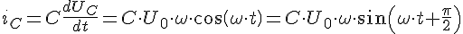
При переходе в комплексную плоскость конденсатор превращается в комплексный резистор
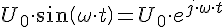
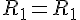
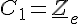
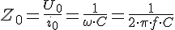 [Ом] - реактивное сопротивление конденсатора
Задаёт пропорцию между током и напряжением
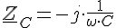
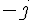 обеспечивает фазовый сдвиг между током и напряжением 90*
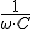 обеспечивает пропорцию между током и напряжением
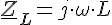 - Для катушки
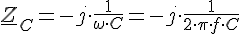
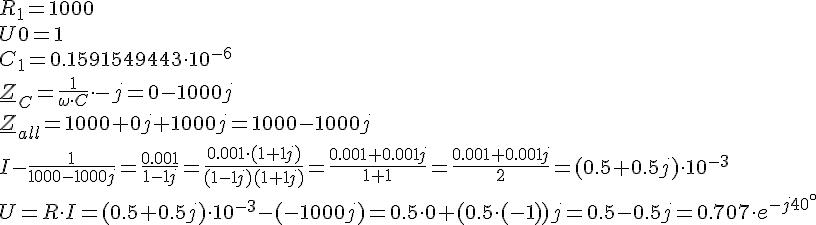